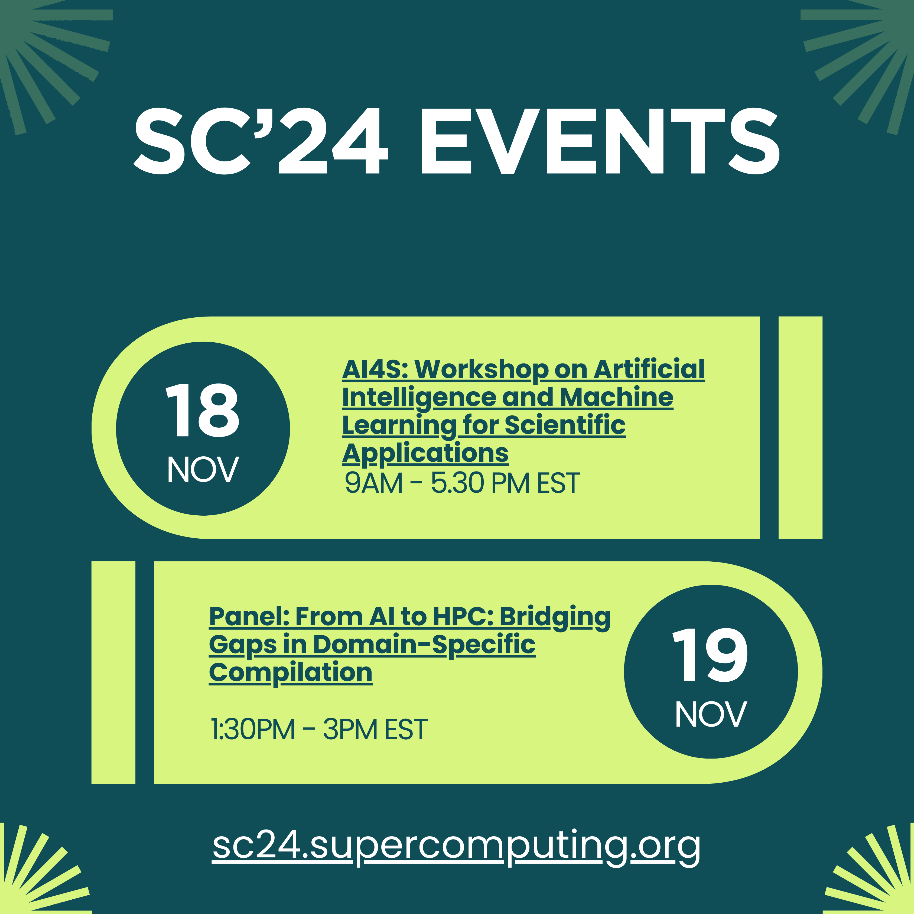

<!DOCTYPE html>
<html lang="en">
<head>
    <meta charset="UTF-8">
    <meta name="viewport" content="width=device-width, initial-scale=1.0">
    <title>Responsive Image Map</title>
    <style>
        /* Center the image and ensure it fills the viewport width */
        body, html {
            margin: 0;
            padding: 0;
            display: flex;
            justify-content: center;
            align-items: center;
            height: 100vh;
            background-color: #f0f0f0;
        }

        img {
            max-width: 100%; /* Ensure the image scales */
            height: auto;
        }
    </style><!DOCTYPE html>
<html lang="en">
<head>
    <meta charset="UTF-8">
    <meta name="viewport" content="width=device-width, initial-scale=1.0">
    <title>Supercomputing Events - Gokcen Kestor  </title>
    <style>
        /* CSS Reset for cross-browser consistency */
        * {
            margin: 0;
            padding: 0;
            box-sizing: border-box;
        }

        /* Set up the body and html to take full height and center content */
        body, html {
            height: 100vh;
            display: flex;
            justify-content: center;
            align-items: center;
            background-color: #104e57; /* Set the desired background color */
            overflow: hidden; /* Hide any potential scroll bars */
        }

        /* Container for the four image sections */
        .image-container {
            display: grid;
            grid-template-rows: 18% 32% 32% 18%; /* Define the row proportions */
            width: 100vw; /* Full viewport width */
            max-width: 800px; /* Limit the max width for larger screens */
            height: 100vh; /* Ensure it fills the entire viewport height */
        }

        /* Style each image section to fit the grid cell */
        .image-container a img {
            width: 100%;
            height: 100%;
            object-fit: contain; /* Ensures the entire image is visible */
            display: block;
        }
    </style>
</head>
<body>

    <!-- Container with four clickable image sections -->
    <div class="image-container">
        <!-- Top section -->
        <a href="" target="_blank">
            
        </a>
        <!-- Middle top section -->
        <a href="https://ai4s.github.io" target="_blank">
            
        </a>
        <!-- Middle bottom section -->
        <a href="./events/sc24_ai_panel.html" target="_blank">
            
        </a>
        <!-- Bottom section -->
        <a href="https://sc24.supercomputing.org" target="_blank">
            
        </a>
    </div>

</body>
</html>

</head>
<body>

    <!-- Main image with a reference to the image map -->
    

    <!-- Define the image map -->
    <map name="image-map">
        <!-- Define clickable areas with coordinates -->
        <area shape="rect" coords="50,50,200,200" href="https://example1.com" alt="Link 1">
        <area shape="circle" coords="300,300,50" href="https://example2.com" alt="Link 2">
        <area shape="poly" coords="400,400,450,450,500,400" href="https://example3.com" alt="Link 3">
    </map>

    <!-- Include the image-map-resizer library -->
    <script src="https://cdnjs.cloudflare.com/ajax/libs/image-map-resizer/1.0.10/js/imageMapResizer.min.js"></script>

    <!-- Initialize the resizer on load -->
    <script>
        document.addEventListener('DOMContentLoaded', function() {
            // Automatically scales image map areas
            imageMapResize();
        });
    </script>

</body>
</html>
